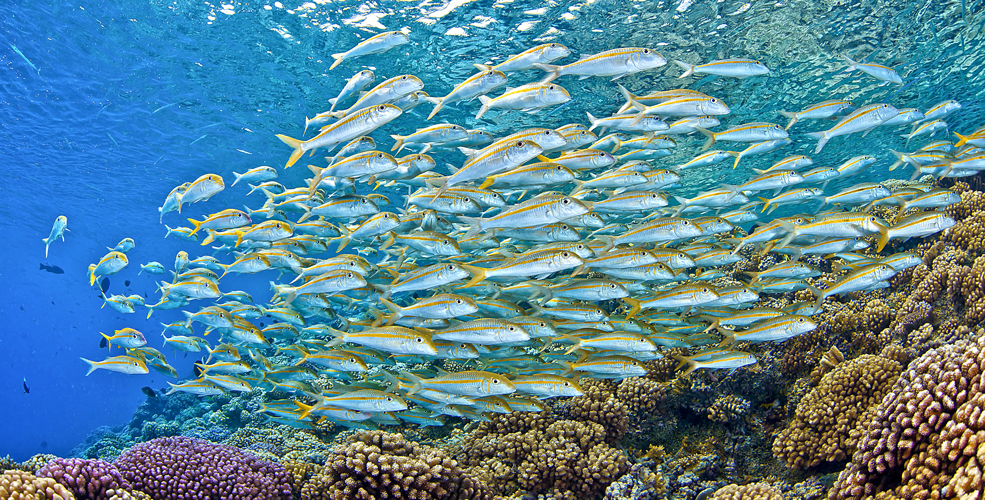
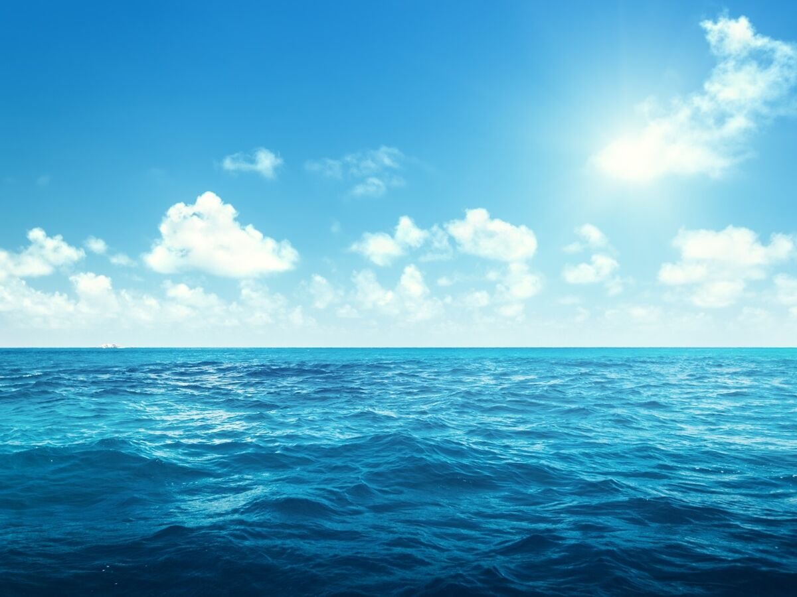
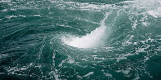

Les poumons de la mer
Le coeur de la mer
L'intestin de la mer
Le cerveau de la mer
Les petons de la mer
Les artères de la mer
Le "cerveau de la mer" fait référence aux systèmes complexes qui régulent et coordonnent les dynamiques océaniques et les comportements des espèces marines. L'une des principales composantes de ce cerveau est le système des courants marins et des gyres, qui circulent les eaux autour de la planète, influençant le climat, la distribution des nutriments et la migration des espèces. Ces flux d'eau, en constante interaction avec l'atmosphère et les écosystèmes, jouent un rôle fondamental dans la régulation de la vie marine.
Le cerveau de la mer inclut également les phénomènes de communication et de coordination au sein des communautés marines. Des espèces telles que les dauphins et les cétacés ont un comportement social complexe, capable de résoudre des problèmes collectivement et de communiquer à travers des sons. Les bancs de poissons et les nuées d'oiseaux marins montrent aussi comment les animaux peuvent agir de manière coordonnée pour chasser ou se protéger.
Enfin, le rôle des récifs coralliens dans le cerveau de la mer ne doit pas être sous-estimé. Ces écosystèmes agissent comme des hubs biologiques, où des milliers d’espèces interagissent et régulent leur environnement, offrant un exemple frappant de la complexité des systèmes marins. Les récifs coralliens assurent un équilibre fragile mais essentiel dans la chaîne alimentaire océanique, tout en fournissant des services écologiques vitaux.

Les "petons de la mer" font référence aux diverses créatures marines qui habitent les zones côtières et les fonds marins peu profonds, jouant un rôle crucial dans l'entretien des écosystèmes marins. Ces animaux, souvent de petite taille mais nombreux, assurent des fonctions vitales telles que la régénération des habitats marins et la régulation des populations d’autres espèces.
Parmi les exemples les plus emblématiques des "petons de la mer" figurent les étoiles de mer, les oursins et les crabes. Ces créatures, souvent dotées de structures particulières comme des pattes ou des épines, se déplacent lentement sur le fond marin et participent à l’entretien des herbiers marins, des récifs et des plages en consommant des algues, des débris et des organismes morts, favorisant ainsi l’équilibre des écosystèmes locaux.
Les "petons de la mer" incluent également des animaux plus petits, comme les gastéropodes et les crustacés, qui déterrent et nettoient les sédiments, facilitant la circulation de l'eau et permettant aux autres organismes de prospérer dans des environnements sains. Ces petites créatures, bien qu'invisibles pour la plupart, jouent un rôle crucial dans la stabilité écologique des zones marines.
Les fonds marins et les sédiments océaniques, souvent surnommés les intestins de la mer, remplissent une fonction essentielle de filtration et de décomposition dans les écosystèmes marins. Ces zones, riches en matière organique, servent de lieu où les déchets marins et les restes d’organismes morts sont dégradés et recyclés par des micro-organismes et des animaux benthiques comme les vers marins, les oursins et les concombres de mer.
Les concombres de mer, en particulier, jouent un rôle crucial dans ce processus. En ingérant le sédiment, ils en extraient les nutriments avant de rejeter une matière enrichie, favorisant ainsi la fertilisation des fonds marins. De même, les bactéries présentes dans les sédiments transforment la matière organique en éléments chimiques utilisables par d'autres formes de vie, fermant ainsi le cycle des nutriments.
Ces processus de digestion et de recyclage assurent la santé des écosystèmes marins en prévenant l'accumulation de déchets et en redistribuant les nutriments dans la chaîne alimentaire. Les intestins de la mer sont donc indispensables au maintien de l'équilibre océanique et à la survie des espèces marines.

Les océans, véritables poumons de la planète, abritent une diversité d'organismes et de plantes qui jouent un rôle crucial dans la production d'oxygène. Le phytoplancton, composé de microalgues microscopiques, est responsable de 50 à 70 % de l'oxygène produit sur Terre grâce à la photosynthèse. Flottant près de la surface, il absorbe le dioxyde de carbone et libère de l'oxygène vital.

Les herbiers marins, comme la posidonie et les zostères, sont des prairies sous-marines présentes dans les eaux côtières. Ces plantes aquatiques non seulement produisent de l'oxygène, mais capturent également d’importantes quantités de carbone, jouant un rôle clé dans la régulation climatique. Les macroalgues, telles que le varech et d'autres algues brunes, rouges et vertes, contribuent également à cet équilibre essentiel.
Enfin, les coraux symbiotiques, grâce à leur relation avec les microalgues appelées zooxanthelles, ajoutent une contribution unique à l'oxygénation des récifs, tout en offrant un habitat pour une incroyable biodiversité marine.
Les courants marins, souvent appelés les artères de la mer, jouent un rôle fondamental dans la régulation des écosystèmes océaniques et climatiques. Ces mouvements d’eau, créés par les vents, la rotation terrestre et les différences de température et de salinité, transportent des nutriments essentiels, de l'oxygène et de la chaleur à travers les océans.
Le Gulf Stream, par exemple, est l'une des artères marines les plus célèbres. Ce courant chaud transporte des eaux tropicales vers les régions tempérées et polaires, influençant non seulement les écosystèmes marins, mais aussi les climats continentaux. D'autres courants, comme le courant de Humboldt ou le courant de Californie, favorisent la montée des eaux riches en nutriments, soutenant la vie marine et la pêche.
Ces artères de la mer ne se limitent pas aux grands courants. Les mouvements de marées et les courants côtiers, bien que plus locaux, assurent la circulation des sédiments et la régénération des écosystèmes côtiers, tout en permettant la dispersion des larves et des espèces marines. Ces réseaux dynamiques sont essentiels à la santé et à la survie des océans.
Le cœur de la mer symbolise les écosystèmes et phénomènes océaniques qui maintiennent l'équilibre vital de nos océans. Parmi eux, les zones de convergence océanique, comme les gyres, jouent un rôle clé en réunissant les eaux de différents courants et en créant des zones de forte biodiversité où se concentrent la vie marine et les ressources.
Les récifs coralliens, souvent considérés comme le cœur battant des océans tropicaux, soutiennent une grande partie de la biodiversité marine. Ces écosystèmes riches et complexes fournissent nourriture et habitat à des milliers d'espèces tout en agissant comme des barrières naturelles contre l'érosion côtière. De même, les upwellings, des remontées d’eaux profondes riches en nutriments, nourrissent ces régions vitales, les transformant en points névralgiques de productivité.
Enfin, les abysses, bien que mystérieux, abritent des cheminées hydrothermales où la vie prospère dans des conditions extrêmes. Ces zones, véritable cœur énergétique des profondeurs, sont essentielles pour comprendre l'origine et la résilience de la vie sur Terre.
